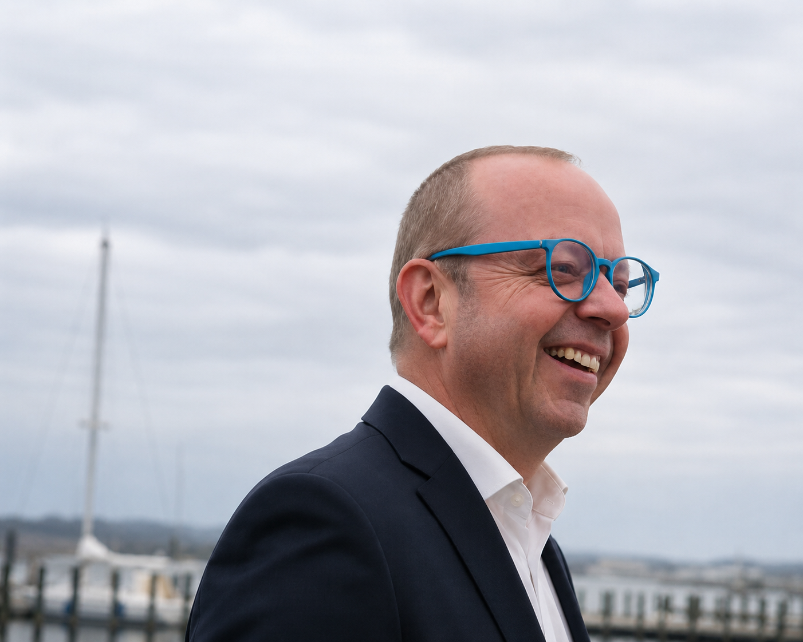

Executive Leadership | Business Strategy | Asset Management | Organisational Transformation
Leave every organisation stronger than you found it.
Senior executive with 20+ years of international hospitality leadership, combining technical operations, asset management, digital transformation and business strategy across large-scale hotel environments.
I partner with owners, CEOs and executive teams to strengthen operational performance, protect asset value and build organisations that are resilient, efficient and commercially aligned.

Executive Profile
Leadership shaped by operations, assets, people and long-term value.
My leadership experience sits at the intersection of hospitality operations, technical infrastructure, building performance, financial stewardship and stakeholder confidence.
I bring a calm, structured and analytical approach to complex organisations, with a focus on trust, clarity, accountability and practical execution.
Strategic Asset Management
Protecting and enhancing asset value through lifecycle thinking, CAPEX priorities and operational discipline.
Operational Excellence
Strengthening reliability, service continuity, guest experience, compliance and team performance.
Technology & Transformation
Using digital systems and technical governance to improve efficiency, visibility and control.
Stakeholder Leadership
Aligning owners, CEOs, finance, operations, suppliers and teams around practical business outcomes.
The Alexander Wich Executive Framework
A structured approach to assess, align and strengthen organisations.
Understand
People, culture, business, assets and performance drivers.
Assess
Strengths, risks, opportunities and value leakage.
Align
Owners, management, teams, suppliers and stakeholders.
Execute
Priorities, governance, improvement and measurable results.
Sustain
KPIs, standards, culture and long-term business resilience.
Portfolio
Selected leadership experience across large-scale hotel environments.
Clarion Hotel Copenhagen Airport
Large-scale airport hotel environment with complex technical infrastructure and high operational demands.
Comfort Hotel Copenhagen Airport
605-room hotel with approximately 5,000 m² conference and event facilities.
420M DKK+
Cluster revenue in 2024
988 Rooms
Total hotel room portfolio
61,000 m²
Approx. combined building area
Contact
Let’s start the conversation.
Available for executive leadership, senior director roles, transformation projects, asset management and future advisory opportunities.
Alexander Wich
Email: your@email.com
LinkedIn: linkedin.com/in/yourprofile
Denmark | Germany | International